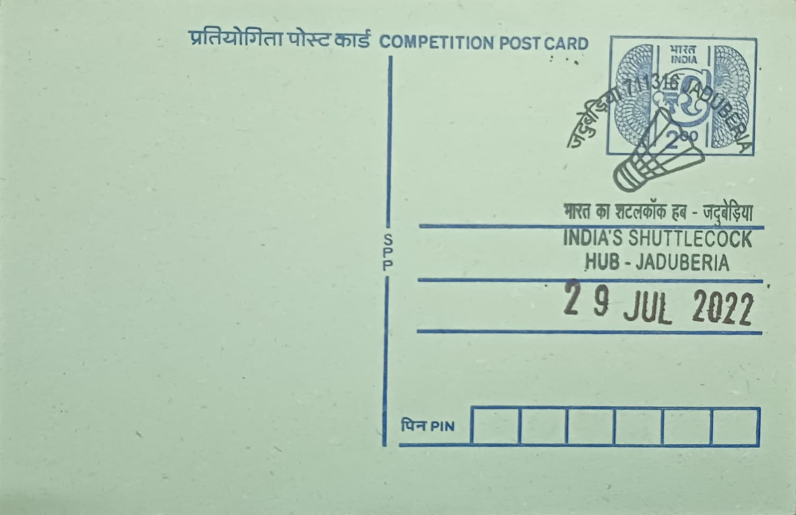

Shuttlecock
ব্যাডমিন্টন শাটল


The shuttlecock-making tradition of Jadurberia and its neighbouring villages in the Uluberia sub-division of Howrah district traces its origins to the 1920s, when Ganendranath Bose, who had worked in a Kolkata sporting-goods establishment supplying shuttlecocks to clubs frequented by British officials, learned the craft from the traders he dealt with and began manufacturing shuttlecocks locally. His venture, remembered as J. Bose and Company, is credited as the first such unit in the region, operating out of nearby Pirpur village before the skill spread as his trained workers went on to set up their own small workshops across Jadurberia and the surrounding countryside, giving rise to what would become one of India's principal indigenous shuttlecock-manufacturing clusters.
As a cottage industry, the Jadurberia cluster occupies a distinctive place in India's sporting-goods economy, being one of the few domestic centres producing feather shuttlecocks largely by hand rather than through mechanised processes. The craft is organised as a home-based, family-run occupation rather than a formal industrial enterprise, with entire households, including women and children, historically contributing to different stages of production. At its height the cluster was estimated to comprise well over a hundred units spread across Jadurberia and adjoining villages such as Pirpur, employing thousands of workers and giving the locality a reputation, reinforced by national and international press coverage, as the shuttlecock-making heartland of eastern India.
Manufacture begins with the careful selection of duck feathers, traditionally sourced in large part from Bangladesh and other regional suppliers, from which sixteen matching feathers are chosen, washed, trimmed to uniform shape, and fixed symmetrically into a rounded cork base to form the finished shuttlecock, a sequence of steps performed almost entirely by hand and refined through practice over years. Workers typically specialise in particular stages of the process, such as feather sorting, trimming, or binding, and output was historically measured in barrels, with the cluster at its peak said to be capable of producing several hundred barrels, and by some estimates millions of shuttlecocks annually, supplying both domestic badminton players and export markets.
The industry's fortunes have become closely tied to the irregular availability of raw duck feathers, with manufacturers reporting that the cost of feathers sourced in bulk rose several-fold within a few years as cross-border supply from Bangladesh grew unreliable, squeezing already thin margins. This pressure has compounded competition from cheaper plastic and synthetic shuttlecocks, including imports, and from the limited mechanisation available to small Jadurberia units compared with larger manufacturers elsewhere, resulting in a marked contraction from the industry's mid-twentieth-century scale to a much smaller number of surviving units in recent years, even as the sport's domestic popularity has grown following the success of Indian players on the international badminton circuit.
A number of the remaining units in Jadurberia continue to operate as family businesses passed down over three or four generations, with local manufacturers and trade bodies periodically appealing to state and central authorities for support in securing feather supplies and modernising production to keep the cluster competitive. Documentary and journalistic accounts, including features by the People's Archive of Rural India, have recorded the craft in detail in recent years as the number of active workshops has fallen sharply from its earlier peak. The surviving workshops of Jadurberia today function less as a mass-production hub than as a shrinking pocket of specialised, hand-based craftsmanship that domestic badminton still depends on for a share of its locally made shuttlecocks.
| Date of Introduction | July 20, 2022 |
|---|---|
| Address | Branch Postmaster, |
| Jaduberia BO, | |
| Howrah (dt.), West Bengal - 711316. |